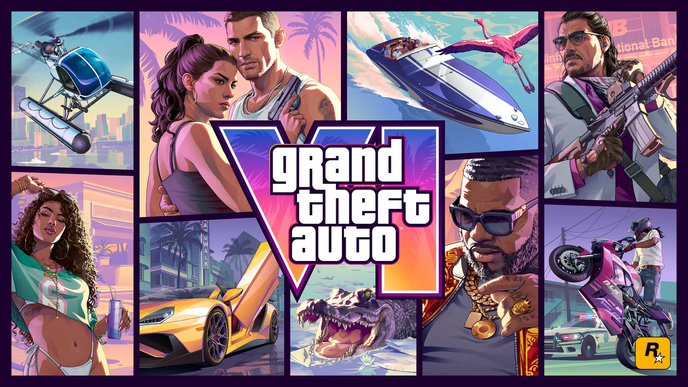
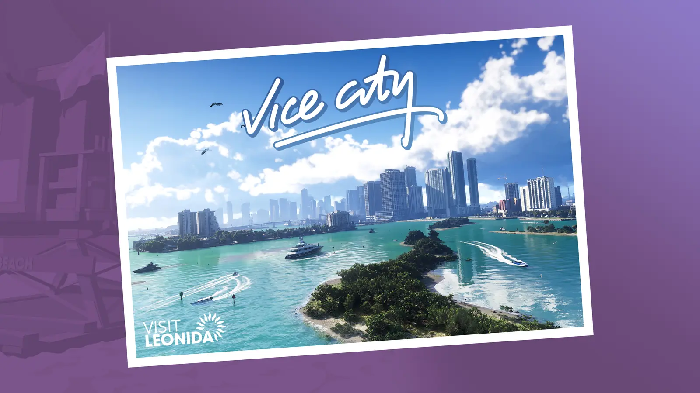
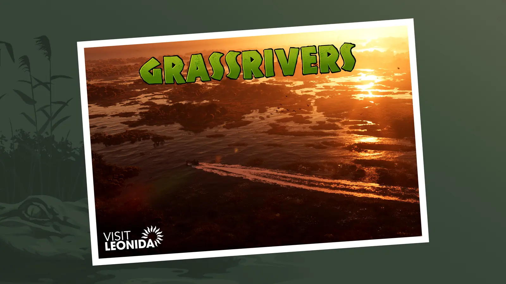
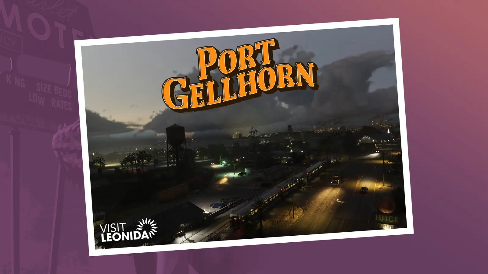
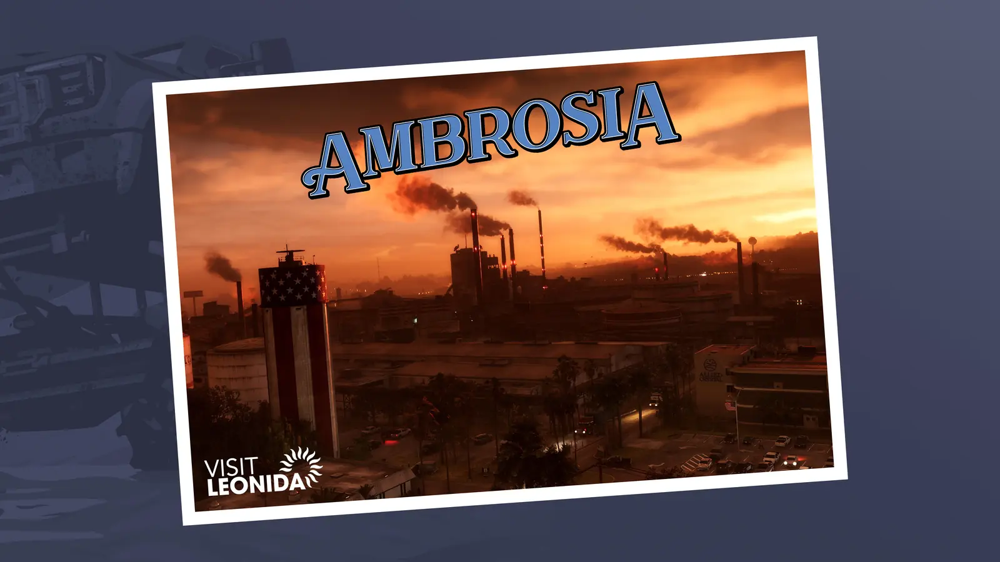
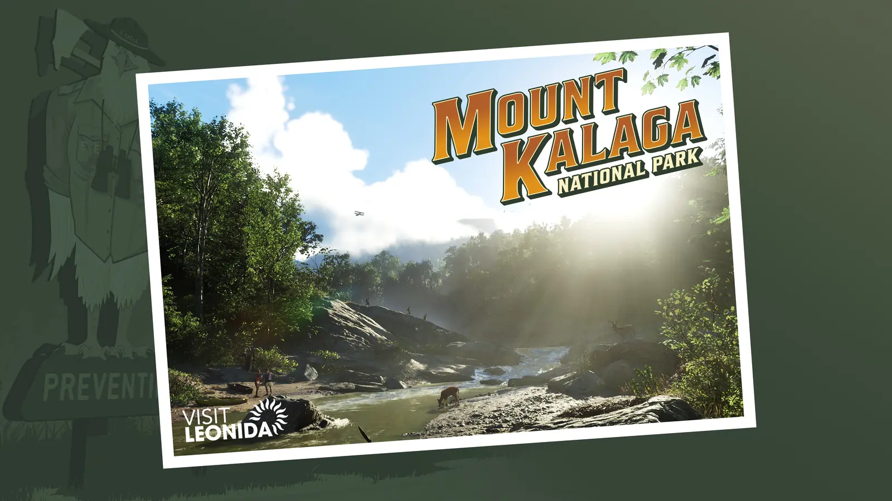

Guía del mapa
El mapa de GTA 6: las 6 zonas de Leonida
GTA 6 no pasa en una ciudad, sino en un estado entero: Leonida, la versión de Rockstar de Florida. Rockstar ha presentado seis zonas oficiales. Aquí tienes qué hay en cada una y por dónde te recomendamos empezar. Cuando salga el juego, ampliamos la guía con lo que vayamos descubriendo.
Vice City
Inspirada en Miami

La gran ciudad del juego: rascacielos, playas, coches de lujo, discotecas y mucho dinero moviéndose por debajo de la mesa. Aquí pasará buena parte de la historia.
Leonida Keys
Inspirada en los Cayos de Florida

Islas al sur unidas por puentes largísimos sobre el mar. Según Rockstar, es donde vive Jason al empezar la historia, así que será de las primeras zonas que pises.
Grassrivers
Inspirada en los Everglades

Pantanos, manglares y agua por todas partes. Es la zona de los caimanes, y Rockstar avisa de que en lo más profundo hay cosas más raras.
Port Gellhorn
Inspirada en Panama City

Rockstar la llama la costa olvidada: un antiguo destino de vacaciones con moteles baratos, atracciones cerradas y centros comerciales vacíos.
Ambrosia
Junto al lago Leonida

Campo e industria alrededor de una enorme refinería de azúcar. Territorio de moteros y de gente que no quiere visitas.
Mount Kalaga
Parque nacional

La zona más salvaje y montañosa: bosques, ríos y senderos. Es la que menos ha enseñado Rockstar.
¿Por dónde empezar?
La historia te llevará de una zona a otra, así que las primeras horas lo mejor es seguirla. Cuando tengas algo de dinero y un buen coche, explora: los Cayos y Vice City para la acción; Grassrivers y Mount Kalaga para perderte; y Port Gellhorn y Ambrosia con cuidado.
Las zonas y sus descripciones son oficiales de Rockstar. Los mapas completos que verás por internet están hechos por fans: Rockstar no ha publicado uno antes del lanzamiento.
Te lo explico en vídeo
¿Vas a empezar ya? Mira los consejos para tus primeras horas (policía, dinero, atracos y coches) y a qué hora sale en tu país.
Vive el lanzamiento conmigo
Cada día subo algo nuevo de GTA 6: noticias, teorías, trucos y gameplay. Y gameplay mío con guías y secretos.
Suscríbete a Godca en YouTube